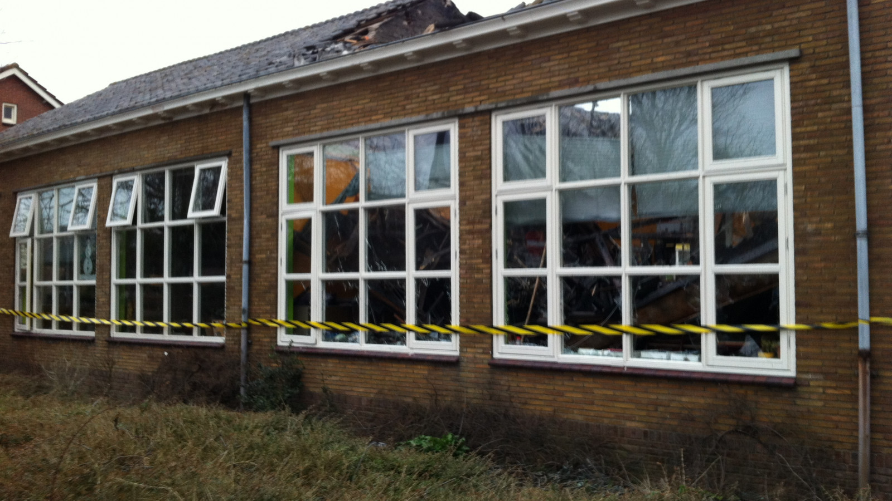
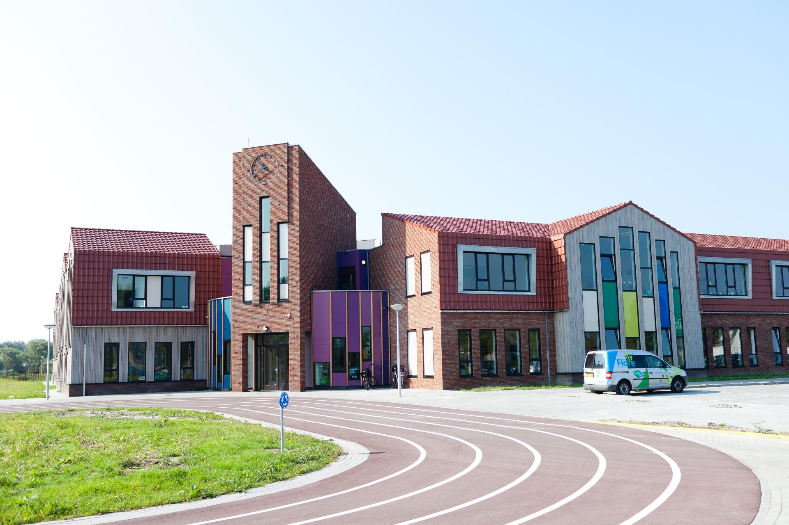
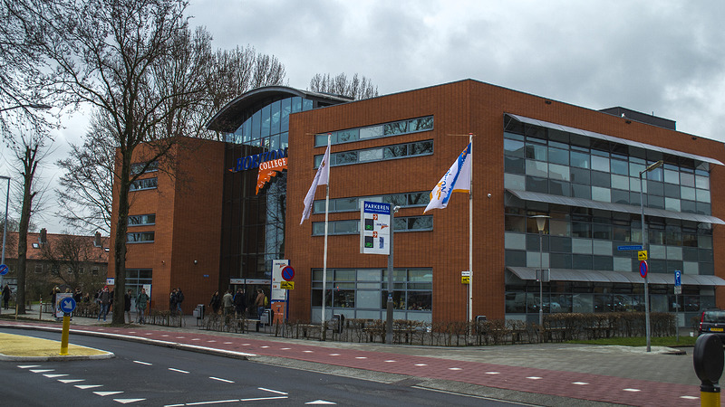

Basisschool
Ik zat in Warmenhuizen op de basisschool. De basisschool heeft in de 8 jaar dit ik erop heb gezeten 4 keer van naam veranderd. als eerst heette het "de vincenttiusschool". Als tweede naam kreeg het "de theresia". Als derde naam kreeg het "de Doorbraak". Deze naam was uitgekozen omdat er twee scholen samen gingen en ze allebei aan de doorbraak lagen. En als laatste naam (wat nu nog steeds zo is) werd het "de hoge ven" genoemd. Dit was een heel nieuw gebouw wat gebouwd werd. In dit gebouw zijn er 4 scholen samen gegaan als 1. Dit was bij het begin nog een klein discusie punt omdat er 2 katholieken en 2 protestantse scholen samen moesten gaan. Maar uiteindelijk hebben ze geloof niet op nummer 1 gezet waardoor alles perfect was opgelost. Verder zit in dit gebouw een kinderopvang en naschoolse opvang.
 Vervolg opleiding
Als gevolg opleiding had ik gekozen voor MBO 3 Software Developer op het Horizon College in Alkmaar. Dit was voor mij een lastige keuze omdat ik eigenlijk helemaal niet wist wat ik eigenlijke wilden doen. Ik was naar vele open dagen geweest. Ondanks dat wist ik nog steeds niet welke opleiding ik wilde doen. Mijn ouders bleven hammeren dat ik een HBO opleiding moest kiezen. Maar uiteindelijk ben ik bij deze opleiding uitgekomen. En ga ik er met plezier heen. Ook al weet ik nog steeds niet wat ik later wil worden.
